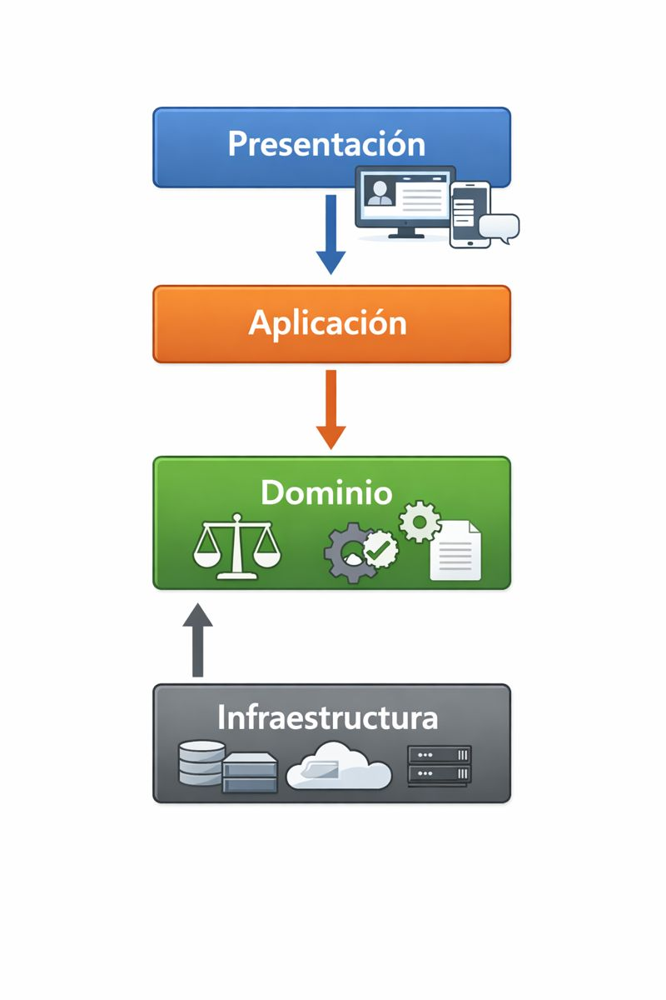
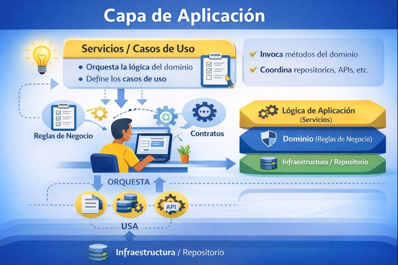
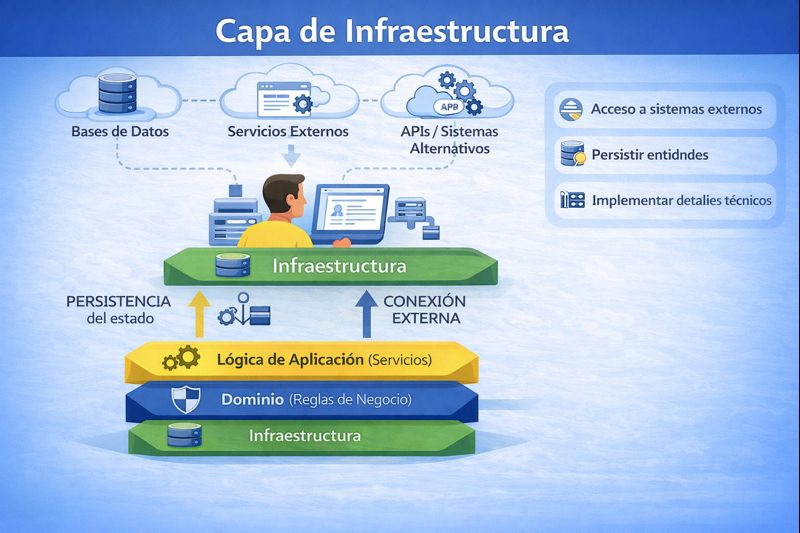

Diseño por capas de aplicaciones en Python¶
Qué es el diseño por capas¶
En programación, especialmente en apps o programas grandes, se suele usar el "diseño por capas". Con ello conseguimos dividir el código en partes separadas, cada una con un trabajo específico, para que el programa sea más fácil de entender, cambiar y arreglar.
Las capas típicas son:
- Dominio (o negocio): Las reglas principales de cómo funciona tu app (ej: "un libro no se puede prestar si ya está prestado").
- Aplicación: Coordina las acciones (ej: "registra un libro llamando a las reglas del dominio").
- Infraestructura: Cómo guardas datos (ej: en memoria, archivos o una base de datos).
- Presentación: Es la "cara visible" de la app.
La idea es que cada capa dependa solo de las más internas, pero no al revés. Así, si cambias algo en una capa, no rompes las demás.

El objetivo principal es que el código sea más fácil de entender, mantener y modificar.
Capa de Presentación¶
Es la capa más externa.
La capa de presentación es la parte del programa que se encarga de interactuar directamente con el usuario. Su trabajo principal es:
Mostrar información: Dibujar menús, textos, imágenes o resultados en la pantalla. Recibir inputs del usuario: Pedir datos como clics, textos escritos o selecciones. Traducir entre el usuario y el resto del programa: Toma lo que el usuario dice (ej: "quiero prestar un libro") y lo pasa a las capas internas para que hagan el trabajo real. Luego, toma los resultados de esas capas y los muestra de forma amigable.
Esta capa NO decide las reglas a aplicar. Solo es el "mensajero" o "interfaz". No hace cálculos complicados ni guarda datos permanentemente. Si la quitas o la cambias, el "corazón" de la app (reglas y datos) sigue funcionando igual.
En términos simples:
- Es la UI (User Interface) o interfaz de usuario.
- En apps de consola usa comandos como print() para mostrar y input() para pedir datos.
- En apps más modernas, podría ser una página web, una app móvil o incluso voz (como Siri).
Ventajas de tener esta capa separada:¶
- Fácil de cambiar: Si hoy tu app es por consola y mañana quieres hacerla web, solo cambias esta capa. El resto del programa queda igual.
- Más limpia: Evitas que el código de reglas se mezcle con prints e inputs, lo que hace el programa menos confuso.
- Mejor para equipos de trabajo: Un diseñador puede trabajar en la presentación mientras un programador hace las reglas internas.
- Fácil de probar: Puedes probar las reglas sin necesidad de una pantalla real.
Ejemplo aplicación de consola de gestión de una Biblioteca¶
La capa de presentación muestra un menú simple en la consola
Luego, pide al usuario una opción con input("Elige una opción: ").
Dependiendo de lo que elija, pide más datos (ej: título del libro) y llama a la capa de aplicación (el "servicio") para hacer el trabajo real.
Ejemplo de código en acción:
Imagina que eliges "1" (Registrar libro):
- La presentación pide:
titulo = input("Título del libro: ").strip() - Luego, llama:
servicio.registrar_libro(titulo) - Si todo sale bien, muestra:
print("Libro registrado.") -
Si hay error (ej: título vacío), atrapa el
ValueErrory muestra:print("error: " + str(e)) -
Al ser presentación: Todo es sobre "hablar con el usuario". No comprueba si el título ya existe (eso lo hacen las capas de aplicación y dominio). No guarda nada en archivos (eso es infraestructura). Solo muestra y pide.
- Qué pasa si la cambiamos: Supón que quieres convertir esta app en una web. Cambiaríamos el archivo con las clases que generan la presentación por un archivo que genere HTML y maneje clics en botones. Pero el código de prestar/devolver libros (en dominio y aplicación) no cambia ni una línea.
Capa de Aplicación¶

La capa de aplicación es la parte del programa que coordina los "casos de uso" o acciones principales que el usuario puede hacer. Un "caso de uso" es algo como "registrar un libro", "prestarlo" o "listar todos". Esta capa:
- Recibe solicitudes: Toma los datos que vienen de la presentación (ej: un título de libro).
- Coordina el trabajo: Llama a las reglas del dominio (para validar) y a la infraestructura (para guardar o leer datos).
- Maneja el flujo: Decide el orden de las cosas, como "primero comprueba si el libro existe, luego aplica la regla de prestar, y al final guarda los cambios".
- Devuelve resultados: Envía de vuelta a la presentación lo que pasó (éxito o error), para que lo muestre al usuario.
Esta capa NO inventa reglas (de eso se encarga el dominio) ni se preocupa por cómo mostrar las cosas (eso lo hace la presentación). Tampoco guarda datos directamente (infraestructura).
Es pura "organización": une las piezas internas para que la app funcione como un todo. Es como el "gerente" de un restaurante: recibe el pedido del camarero (presentación), le dice al chef qué cocinar (dominio) y usa los ingredientes del almacén (infraestructura).
Ventajas de tener esta capa separada¶
- Centraliza las acciones: Todas las operaciones importantes están en un solo lugar, fácil de encontrar y modificar.
- Facilita pruebas: Puedes probar los casos de uso sin necesidad de una interfaz gráfica o consola. Solo llamas a los métodos. Como cuando hemos ejecutado las pruebas en los ejercicios anteriores..
- Escalable: Si añades una nueva acción (ej: "buscar libro por autor"), la pones aquí sin tocar las reglas profundas.
- Independiente: No depende de cómo se muestra la app o cómo se guardan datos. Si cambias la base de datos o la interfaz de usario, esta capa casi no se entera.
Ejemplo de aplicación de la Biblioteca¶
- Qué haría: Coordina las acciones de la app.
- Por ejemplo, en
prestar_libro(self, titulo)- Primero, busca el libro en el repositorio (infraestructura):
libro = self._repo.obtener_por_titulo(titulo) - Comprueba si existe (si no, lanza error).
- Llama a la regla del dominio:
libro.prestar()(aquí se aplica "no prestar si ya prestado"). - Guarda los cambios en el repositorio (infraestructura):
self._repo.guardar(libro).
- Primero, busca el libro en el repositorio (infraestructura):
- El comportamiento sería similar para
registrar_libro(),devolver_libro()ylistar_libros() - Cómo interactúa:
- La presentación (menú) llama a estos métodos: ej,
servicio.prestar_libro(titulo). - No hay
print()niinput()aquí: eso está en presentación. - No hay reglas como "
if self._prestado": eso está en el dominio (clase Libro). - Por qué es aplicación: Organiza el flujo: buscar → validar (vía dominio) → guardar (vía infra). Si quitas esta capa, la presentación tendría que hablar directamente con dominio e infra, lo que sería un desastre (código repetido y mezclado).
- Qué pasa si la cambiamos: Supón que añades un nuevo caso de uso, como "eliminar libro". Lo añades a esta capa creando un método nuevo que coordine "comprueba regla en dominio + borra en infra". La presentación solo añade una opción en el menú, y el dominio añade la regla si hace falta.
Capa de Dominio¶
La capa de dominio es la parte del programa que define las reglas principales y el "conocimiento" del problema que estás resolviendo. En palabras sencillas, es donde pones "qué significa" cada cosa en tu app y "qué se permite o no". Por ejemplo:
- Entidades: Cosas como "un libro" o "un usuario", con sus propiedades (título, si está prestado, ...).
- Reglas de negocio: Condiciones como "no se puede prestar un libro si ya está prestado" o "el título no puede estar vacío".
- Lógica central: Cómo cambian las cosas (ej: marcar un libro como prestado).
Esta capa NO se ocupa por cómo mostrar las cosas, ni por coordinar acciones grandes (eso es aplicación), ni por guardar datos. Es pura "inteligencia del dominio": encapsula (esconde) las reglas para que nadie las rompa accidentalmente. Piensa en ella como el "manual de instrucciones" de un juego de mesa: define qué es válido (ej: no puedes mover una ficha si no es tu turno), pero no dibuja el tablero (presentación) ni cuenta los puntos automáticamente (aplicación).
Ventajas de tener esta capa separada:¶
- Independencia: Las reglas no cambian si modificas la interfaz o el almacenamiento.
- Seguridad: Las reglas se cumplen siempre porque están "protegidas" dentro de clases (nadie las salta desde fuera).
- Reusabilidad: Puedes usar estas reglas en otras apps o hacer test a las mismas sin el resto del programa.
- Fácil de cambiar reglas: Si el negocio cambia (ej: "ahora no prestar si el libro es antiguo"), solo tocas aquí, no todo el código.
Ejemplo de aplicación en biblioteca¶
En el caso de la biblioteca, esta capa suele incluir clases como Libro (para entidades). Contiene archivos como libro.py y repositorio_libros.py:
libro.py: Define la claseLibro.- Propiedades:
_tituloy_prestado(protegidas, para que nadie las cambie directamente). - Reglas: En
__init__(constructor), comprueba "título no vacío" y lanzaValueErrorsi falla. - Métodos:
prestar()comprueba "si ya prestado, error";devolver()comprueba "si no prestado, error". - En
repositorio_libros.py: Define un "contrato" (clase con métodos vacíos) para qué debe hacer un repositorio (guardar, obtener, listar). No implementa nada: solo dice "quien lo use, debe tener estos métodos".
Cómo interactúa:
- La aplicación llama a estas reglas.
- No hay código de guardar (eso es infraestructura) ni de mostrar (sin prints).
Por tanto, aquí están las "verdades esenciales" de una biblioteca: qué es un libro, qué reglas tiene. Si cambias una regla (ej: añadir "no prestar si dañado"), modificas Libro y todo el sistema lo respeta.
Capa de Infraestructura¶

Es la parte del programa que maneja los detalles técnicos y "externos", como cómo se guardan, leen o procesan los datos en el mundo real. En términos simples:
- Almacenamiento: Dónde y cómo guardar información (ej: en memoria RAM, archivos, bases de datos como SQL, o incluso en la nube).
- Acceso a recursos: Cosas como conectar a internet, leer archivos, o usar hardware (si aplica).
- Implementaciones concretas: Toma "ideas abstractas" del dominio (como un "contrato" para guardar datos) y las hace reales con código específico.
Esta capa NO tiene reglas de negocio (nada como "no prestar si prestado" – eso es dominio). NO coordina acciones (eso es aplicación). NO muestra nada al usuario (sin prints o inputs). Es pura "mecánica". Se enfoca en eficiencia y detalles técnicos, pero debe mantenerse intercambiable.
Ventajas de tener esta capa separada¶
- Flexibilidad: Puedes cambiar cómo guardas datos (de memoria a archivo) sin tocar el resto. - Ideal para escalar: empieza simple, luego pasa a una base de datos real.
- Independencia: El dominio y aplicación no saben "cómo" se guarda – solo "qué" guardar.
- Pruebas y mantenimiento: Puedes probar en un almacenamiento falso (ej: en memoria para tests) y usar uno real en producción.
- Adaptación: Si tu app necesita integrar con servicios externos (ej: API de emails), se hace en esta capa.
Esta capa suele incluir clases que implementan interfaces del dominio, usando estructuras como listas, diccionarios, archivos (con open()) o librerías para bases de datos.
Ejemplo del Tutorial de la Biblioteca¶
Qué hace:
- Implementa el "contrato" del dominio (RepositorioLibros): métodos como guardar(libro), obtener_por_titulo(titulo) y listar().
- Usa un diccionario simple (self._por_titulo = {}) para almacenar libros en memoria (RAM).
Cómo interactúa:
- La aplicación llama a estos métodos: ej, self._repo.guardar(libro) en registrar_libro().
- No hay reglas como chequeos de "prestado" (eso está en dominio).
- Es "concreta": usa un diccionario real, no abstracto.
Como la infraestructura se encarga de "cómo" guardar (en memoria, con un dict). Si queremos cambiar a un archivo JSON, solo hay que crear una nueva clase aquí (ej: RepositorioLibrosArchivo), implementamos los mismos métodos, y solo cambias la instancia en el main (ej: repo = RepositorioLibrosArchivo()). ¡El dominio, aplicación y presentación ni se enteran!
Flujo típico de ejecución¶
De forma resumida, el flujo típico de ejecución de la aplicación es el siguiente:
- El usuario interactúa con la Presentación
- La Presentación llama a la Aplicación
- La Aplicación usa el Dominio
- La Aplicación pide datos a Infraestructura
-
El resultado vuelve hacia arriba
-
Cuando el usuario hace algo. Es un flujo de ida y vuelta (baja por las capas para hacer el trabajo y sube para devolver el resultado).
- No es lineal estricto: la Aplicación actúa como el "director" que va llamando a Dominio e Infraestructura según necesite, pero siempre en ese orden descendente (de fuera a dentro) y luego ascendente (resultados hacia arriba).
Veámoslo en el ejemplo concreto y real de la app de biblioteca: el usuario quiere prestar un libro (opción 2 del menú). Vamos paso a paso, con código y explicaciones sencillas.
Flujo Completo Paso a Paso: Prestar un Libro¶
- El usuario interactúa con la Presentación
- El usuario ve el menú en la consola (archivo
presentation/menu.py):
- Elige "2" y escribe el título, por ejemplo: "Harry Potter".
- Código en
menu.py:
-
Qué hace la Presentación: Solo recoge input del usuario y pasa el título a la Aplicación. No comprueba nada, no guarda nada. Es el "mensajero".
-
La Presentación llama a la Aplicación
- Llama al método
prestar_libro(titulo)de la claseServicioBiblioteca(archivoapplication/servicios.py). - Qué hace la Aplicación: Recibe el título y empieza a coordinar. No decide reglas ni guarda datos; solo organiza el flujo.
Código clave: -
Aquí la Aplicación es el "director": decide el orden: primero buscar, luego aplicar regla, luego guardar.
-
La Aplicación usa el Dominio
- Llama al método
prestar()de la claseLibro(archivodomain/libro.py). - Qué hace el Dominio: Aplica la regla de negocio pura.
Código: - Si el libro ya está prestado → lanza
ValueErrorinmediatamente. - Si no, marca el libro como prestado.
-
Importante: El Dominio no sabe nada de consola, ni de archivos. Solo "sabe" qué es válido en el mundo de la biblioteca. Es independiente.
-
La Aplicación pide datos a Infraestructura (dos veces en este caso)
-
Primero: busca el libro →
self._repo.obtener_por_titulo(titulo)- Llama al repositorio en memoria (archivo
infrastructure/repositorio_memoria.py).
Código: - Devuelve el objeto
Librosi existe (oNonesi no).
- Llama al repositorio en memoria (archivo
-
Segundo: después de aplicar la regla, guarda los cambios →
self._repo.guardar(libro)
Código: -
Qué hace Infraestructura: Maneja el "cómo" se almacenan los datos (aquí en un diccionario en memoria). No valida reglas, no imprime nada. Solo guarda y lee.
-
El resultado vuelve hacia arriba
- Si todo va bien: no hay error → el método
prestar_libro()termina sin lanzar excepción. - La Presentación recibe el control de vuelta y ejecuta:
- Si hay error (ej: libro ya prestado o no existe): se lanza
ValueErrordesde Dominio o Aplicación.- La Aplicación lo propaga hacia arriba (no lo atrapa).
- La Presentación lo atrapa en el
try/except:
- Muestra el mensaje de error al usuario.
Resumen Visual del Flujo¶
Usuario escribe "2" y "Harry Potter"
↓
Presentación (menu.py) → pide título → llama servicio.prestar_libro("Harry Potter")
↓
Aplicación (servicios.py) → coordina:
├── Llama Infra: obtener_por_titulo() → devuelve Libro
├── Llama Dominio: libro.prestar() → aplica regla (si ya prestado → error)
└── Llama Infra: guardar(libro) → actualiza diccionario en memoria
↓ (resultado sube)
Aplicación termina OK o lanza error
↓
Presentación recibe control → print("Libro prestado.") o "Error: Error..."
↓
Usuario ve el mensaje en consola